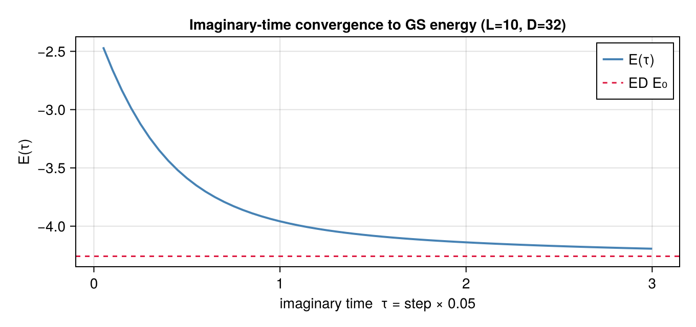
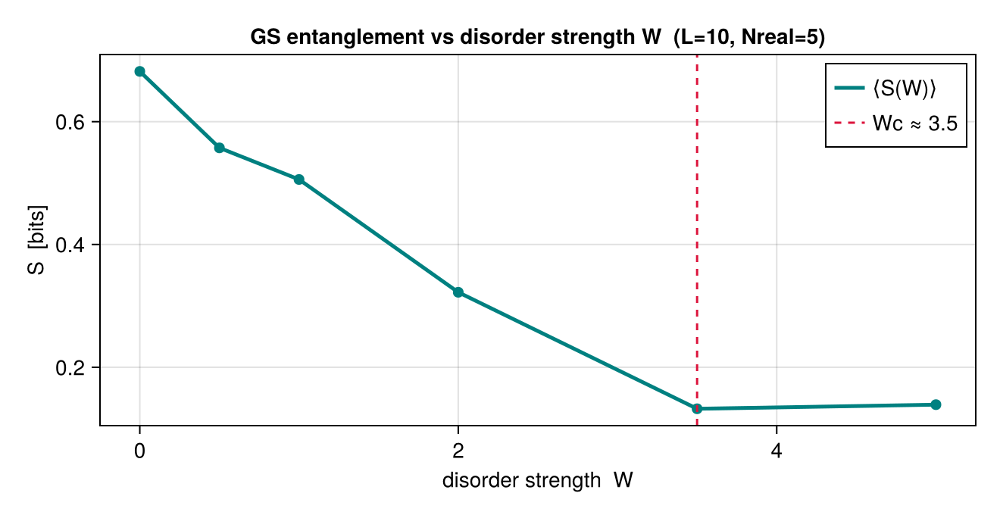

using LinearAlgebra, Random, Statistics, Qritical
using CairoMakie
L = 10
dof = SpinHalf()
g = Chain(L)
println("MBL study: L=$L spin-½ chain")MBL study: L=10 spin-½ chain
Ex 9. Many-Body Localization and Imaginary-Time Ground State
Week 9 — two faces of "how entangled is the state?" The unifying theme is the area law. A gapped 1D ground state is entangled only near a cut — its entropy is bounded by a constant, so a modest bond dimension captures it (this is why MPS/DMRG work). A generic quenched state instead fills with entanglement ballistically (Week 8). This week probes both boundaries of that picture.
Two problems in one:
Part A — Imaginary-time TEBD finds the ground state of the clean XXZ chain by evolving $|\psi(\tau)\rangle = e^{-H\tau}|\psi_0\rangle / \|\cdot\|$ with $\tau\to\infty$. The norm diverges exponentially, so we re-canonicalize after each step.
Part B — MBL disorder adds random on-site fields $h_i \in [-W, W]$ to the Hamiltonian. Above the MBL critical disorder $W_c \approx 3.5$, all eigenstates localize and entanglement growth saturates to an area law instead of growing linearly.
Ground states of gapped, short-range 1D Hamiltonians obey $S_{A|B}\lesssim\text{const}$ (only $S\sim\log L$ at criticality). Since the bond dimension needed scales as $D\sim 2^{S}$, it stays bounded — the relevant corner of the exponentially large Hilbert space is compressible. That is the entire reason a fixed $D=32$ below can represent the ground state of a chain whose full Hilbert space has $2^{10}$ dimensions.
Part A — Ground state via imaginary-time evolution
\[e^{-H\tau}\]
projects out excited states exponentially in $\tau$. After sufficient imaginary time, the normalized state converges to $|E_0\rangle$.
Each excited component decays as $e^{-(E_n-E_0)\tau}$ relative to the ground state, so $E(\tau)=\langle H\rangle/\langle\psi|\psi\rangle$ falls monotonically toward $E_0$ from above — it is a variational upper bound at every step. Two error sources keep it slightly above the exact ED value: the finite Trotter step $d\tau$ and the bond-dimension cap $D$. The convergence curve below is therefore also a diagnostic: a plateau above the ED line means $D$ or $d\tau$ is limiting you, not the imaginary time.
H_clean = XXZ(g; J=1.0, Jz=1.0, h=0.0) # isotropic Heisenberg
W_clean = MPO(H_clean)FiniteMPO(Array{ComplexF64, 4}[[0.0 + 0.0im 0.0 + 0.0im;;; 0.0 + 0.0im 0.0 + 0.0im;;;; 0.0 + 0.0im 0.0 + 0.0im;;; 0.5 + 0.0im 0.0 + 0.0im;;;; 0.0 + 0.0im 0.5 + 0.0im;;; 0.0 + 0.0im 0.0 + 0.0im;;;; 0.5 + 0.0im 0.0 + 0.0im;;; 0.0 + 0.0im -0.5 + 0.0im;;;; 1.0 + 0.0im 0.0 + 0.0im;;; 0.0 + 0.0im 1.0 + 0.0im], [1.0 + 0.0im 0.0 + 0.0im; 0.0 + 0.0im 1.0 + 0.0im; 0.0 + 0.0im 0.0 + 0.0im; 0.5 + 0.0im 0.0 + 0.0im; 0.0 + 0.0im 0.0 + 0.0im;;; 0.0 + 0.0im 1.0 + 0.0im; 0.0 + 0.0im 0.0 + 0.0im; 1.0 + 0.0im 0.0 + 0.0im; 0.0 + 0.0im -0.5 + 0.0im; 0.0 + 0.0im 0.0 + 0.0im;;;; 0.0 + 0.0im 0.0 + 0.0im; 0.0 + 0.0im 0.0 + 0.0im; 0.0 + 0.0im 0.0 + 0.0im; 0.0 + 0.0im 0.0 + 0.0im; 0.0 + 0.0im 0.0 + 0.0im;;; 0.0 + 0.0im 0.0 + 0.0im; 0.0 + 0.0im 0.0 + 0.0im; 0.0 + 0.0im 0.0 + 0.0im; 0.0 + 0.0im 0.0 + 0.0im; 0.5 + 0.0im 0.0 + 0.0im;;;; 0.0 + 0.0im 0.0 + 0.0im; 0.0 + 0.0im 0.0 + 0.0im; 0.0 + 0.0im 0.0 + 0.0im; 0.0 + 0.0im 0.0 + 0.0im; 0.0 + 0.0im 0.5 + 0.0im;;; 0.0 + 0.0im 0.0 + 0.0im; 0.0 + 0.0im 0.0 + 0.0im; 0.0 + 0.0im 0.0 + 0.0im; 0.0 + 0.0im 0.0 + 0.0im; 0.0 + 0.0im 0.0 + 0.0im;;;; 0.0 + 0.0im 0.0 + 0.0im; 0.0 + 0.0im 0.0 + 0.0im; 0.0 + 0.0im 0.0 + 0.0im; 0.0 + 0.0im 0.0 + 0.0im; 0.5 + 0.0im 0.0 + 0.0im;;; 0.0 + 0.0im 0.0 + 0.0im; 0.0 + 0.0im 0.0 + 0.0im; 0.0 + 0.0im 0.0 + 0.0im; 0.0 + 0.0im 0.0 + 0.0im; 0.0 + 0.0im -0.5 + 0.0im;;;; 0.0 + 0.0im 0.0 + 0.0im; 0.0 + 0.0im 0.0 + 0.0im; 0.0 + 0.0im 0.0 + 0.0im; 0.0 + 0.0im 0.0 + 0.0im; 1.0 + 0.0im 0.0 + 0.0im;;; 0.0 + 0.0im 0.0 + 0.0im; 0.0 + 0.0im 0.0 + 0.0im; 0.0 + 0.0im 0.0 + 0.0im; 0.0 + 0.0im 0.0 + 0.0im; 0.0 + 0.0im 1.0 + 0.0im], [1.0 + 0.0im 0.0 + 0.0im; 0.0 + 0.0im 1.0 + 0.0im; 0.0 + 0.0im 0.0 + 0.0im; 0.5 + 0.0im 0.0 + 0.0im; 0.0 + 0.0im 0.0 + 0.0im;;; 0.0 + 0.0im 1.0 + 0.0im; 0.0 + 0.0im 0.0 + 0.0im; 1.0 + 0.0im 0.0 + 0.0im; 0.0 + 0.0im -0.5 + 0.0im; 0.0 + 0.0im 0.0 + 0.0im;;;; 0.0 + 0.0im 0.0 + 0.0im; 0.0 + 0.0im 0.0 + 0.0im; 0.0 + 0.0im 0.0 + 0.0im; 0.0 + 0.0im 0.0 + 0.0im; 0.0 + 0.0im 0.0 + 0.0im;;; 0.0 + 0.0im 0.0 + 0.0im; 0.0 + 0.0im 0.0 + 0.0im; 0.0 + 0.0im 0.0 + 0.0im; 0.0 + 0.0im 0.0 + 0.0im; 0.5 + 0.0im 0.0 + 0.0im;;;; 0.0 + 0.0im 0.0 + 0.0im; 0.0 + 0.0im 0.0 + 0.0im; 0.0 + 0.0im 0.0 + 0.0im; 0.0 + 0.0im 0.0 + 0.0im; 0.0 + 0.0im 0.5 + 0.0im;;; 0.0 + 0.0im 0.0 + 0.0im; 0.0 + 0.0im 0.0 + 0.0im; 0.0 + 0.0im 0.0 + 0.0im; 0.0 + 0.0im 0.0 + 0.0im; 0.0 + 0.0im 0.0 + 0.0im;;;; 0.0 + 0.0im 0.0 + 0.0im; 0.0 + 0.0im 0.0 + 0.0im; 0.0 + 0.0im 0.0 + 0.0im; 0.0 + 0.0im 0.0 + 0.0im; 0.5 + 0.0im 0.0 + 0.0im;;; 0.0 + 0.0im 0.0 + 0.0im; 0.0 + 0.0im 0.0 + 0.0im; 0.0 + 0.0im 0.0 + 0.0im; 0.0 + 0.0im 0.0 + 0.0im; 0.0 + 0.0im -0.5 + 0.0im;;;; 0.0 + 0.0im 0.0 + 0.0im; 0.0 + 0.0im 0.0 + 0.0im; 0.0 + 0.0im 0.0 + 0.0im; 0.0 + 0.0im 0.0 + 0.0im; 1.0 + 0.0im 0.0 + 0.0im;;; 0.0 + 0.0im 0.0 + 0.0im; 0.0 + 0.0im 0.0 + 0.0im; 0.0 + 0.0im 0.0 + 0.0im; 0.0 + 0.0im 0.0 + 0.0im; 0.0 + 0.0im 1.0 + 0.0im], [1.0 + 0.0im 0.0 + 0.0im; 0.0 + 0.0im 1.0 + 0.0im; 0.0 + 0.0im 0.0 + 0.0im; 0.5 + 0.0im 0.0 + 0.0im; 0.0 + 0.0im 0.0 + 0.0im;;; 0.0 + 0.0im 1.0 + 0.0im; 0.0 + 0.0im 0.0 + 0.0im; 1.0 + 0.0im 0.0 + 0.0im; 0.0 + 0.0im -0.5 + 0.0im; 0.0 + 0.0im 0.0 + 0.0im;;;; 0.0 + 0.0im 0.0 + 0.0im; 0.0 + 0.0im 0.0 + 0.0im; 0.0 + 0.0im 0.0 + 0.0im; 0.0 + 0.0im 0.0 + 0.0im; 0.0 + 0.0im 0.0 + 0.0im;;; 0.0 + 0.0im 0.0 + 0.0im; 0.0 + 0.0im 0.0 + 0.0im; 0.0 + 0.0im 0.0 + 0.0im; 0.0 + 0.0im 0.0 + 0.0im; 0.5 + 0.0im 0.0 + 0.0im;;;; 0.0 + 0.0im 0.0 + 0.0im; 0.0 + 0.0im 0.0 + 0.0im; 0.0 + 0.0im 0.0 + 0.0im; 0.0 + 0.0im 0.0 + 0.0im; 0.0 + 0.0im 0.5 + 0.0im;;; 0.0 + 0.0im 0.0 + 0.0im; 0.0 + 0.0im 0.0 + 0.0im; 0.0 + 0.0im 0.0 + 0.0im; 0.0 + 0.0im 0.0 + 0.0im; 0.0 + 0.0im 0.0 + 0.0im;;;; 0.0 + 0.0im 0.0 + 0.0im; 0.0 + 0.0im 0.0 + 0.0im; 0.0 + 0.0im 0.0 + 0.0im; 0.0 + 0.0im 0.0 + 0.0im; 0.5 + 0.0im 0.0 + 0.0im;;; 0.0 + 0.0im 0.0 + 0.0im; 0.0 + 0.0im 0.0 + 0.0im; 0.0 + 0.0im 0.0 + 0.0im; 0.0 + 0.0im 0.0 + 0.0im; 0.0 + 0.0im -0.5 + 0.0im;;;; 0.0 + 0.0im 0.0 + 0.0im; 0.0 + 0.0im 0.0 + 0.0im; 0.0 + 0.0im 0.0 + 0.0im; 0.0 + 0.0im 0.0 + 0.0im; 1.0 + 0.0im 0.0 + 0.0im;;; 0.0 + 0.0im 0.0 + 0.0im; 0.0 + 0.0im 0.0 + 0.0im; 0.0 + 0.0im 0.0 + 0.0im; 0.0 + 0.0im 0.0 + 0.0im; 0.0 + 0.0im 1.0 + 0.0im], [1.0 + 0.0im 0.0 + 0.0im; 0.0 + 0.0im 1.0 + 0.0im; 0.0 + 0.0im 0.0 + 0.0im; 0.5 + 0.0im 0.0 + 0.0im; 0.0 + 0.0im 0.0 + 0.0im;;; 0.0 + 0.0im 1.0 + 0.0im; 0.0 + 0.0im 0.0 + 0.0im; 1.0 + 0.0im 0.0 + 0.0im; 0.0 + 0.0im -0.5 + 0.0im; 0.0 + 0.0im 0.0 + 0.0im;;;; 0.0 + 0.0im 0.0 + 0.0im; 0.0 + 0.0im 0.0 + 0.0im; 0.0 + 0.0im 0.0 + 0.0im; 0.0 + 0.0im 0.0 + 0.0im; 0.0 + 0.0im 0.0 + 0.0im;;; 0.0 + 0.0im 0.0 + 0.0im; 0.0 + 0.0im 0.0 + 0.0im; 0.0 + 0.0im 0.0 + 0.0im; 0.0 + 0.0im 0.0 + 0.0im; 0.5 + 0.0im 0.0 + 0.0im;;;; 0.0 + 0.0im 0.0 + 0.0im; 0.0 + 0.0im 0.0 + 0.0im; 0.0 + 0.0im 0.0 + 0.0im; 0.0 + 0.0im 0.0 + 0.0im; 0.0 + 0.0im 0.5 + 0.0im;;; 0.0 + 0.0im 0.0 + 0.0im; 0.0 + 0.0im 0.0 + 0.0im; 0.0 + 0.0im 0.0 + 0.0im; 0.0 + 0.0im 0.0 + 0.0im; 0.0 + 0.0im 0.0 + 0.0im;;;; 0.0 + 0.0im 0.0 + 0.0im; 0.0 + 0.0im 0.0 + 0.0im; 0.0 + 0.0im 0.0 + 0.0im; 0.0 + 0.0im 0.0 + 0.0im; 0.5 + 0.0im 0.0 + 0.0im;;; 0.0 + 0.0im 0.0 + 0.0im; 0.0 + 0.0im 0.0 + 0.0im; 0.0 + 0.0im 0.0 + 0.0im; 0.0 + 0.0im 0.0 + 0.0im; 0.0 + 0.0im -0.5 + 0.0im;;;; 0.0 + 0.0im 0.0 + 0.0im; 0.0 + 0.0im 0.0 + 0.0im; 0.0 + 0.0im 0.0 + 0.0im; 0.0 + 0.0im 0.0 + 0.0im; 1.0 + 0.0im 0.0 + 0.0im;;; 0.0 + 0.0im 0.0 + 0.0im; 0.0 + 0.0im 0.0 + 0.0im; 0.0 + 0.0im 0.0 + 0.0im; 0.0 + 0.0im 0.0 + 0.0im; 0.0 + 0.0im 1.0 + 0.0im], [1.0 + 0.0im 0.0 + 0.0im; 0.0 + 0.0im 1.0 + 0.0im; 0.0 + 0.0im 0.0 + 0.0im; 0.5 + 0.0im 0.0 + 0.0im; 0.0 + 0.0im 0.0 + 0.0im;;; 0.0 + 0.0im 1.0 + 0.0im; 0.0 + 0.0im 0.0 + 0.0im; 1.0 + 0.0im 0.0 + 0.0im; 0.0 + 0.0im -0.5 + 0.0im; 0.0 + 0.0im 0.0 + 0.0im;;;; 0.0 + 0.0im 0.0 + 0.0im; 0.0 + 0.0im 0.0 + 0.0im; 0.0 + 0.0im 0.0 + 0.0im; 0.0 + 0.0im 0.0 + 0.0im; 0.0 + 0.0im 0.0 + 0.0im;;; 0.0 + 0.0im 0.0 + 0.0im; 0.0 + 0.0im 0.0 + 0.0im; 0.0 + 0.0im 0.0 + 0.0im; 0.0 + 0.0im 0.0 + 0.0im; 0.5 + 0.0im 0.0 + 0.0im;;;; 0.0 + 0.0im 0.0 + 0.0im; 0.0 + 0.0im 0.0 + 0.0im; 0.0 + 0.0im 0.0 + 0.0im; 0.0 + 0.0im 0.0 + 0.0im; 0.0 + 0.0im 0.5 + 0.0im;;; 0.0 + 0.0im 0.0 + 0.0im; 0.0 + 0.0im 0.0 + 0.0im; 0.0 + 0.0im 0.0 + 0.0im; 0.0 + 0.0im 0.0 + 0.0im; 0.0 + 0.0im 0.0 + 0.0im;;;; 0.0 + 0.0im 0.0 + 0.0im; 0.0 + 0.0im 0.0 + 0.0im; 0.0 + 0.0im 0.0 + 0.0im; 0.0 + 0.0im 0.0 + 0.0im; 0.5 + 0.0im 0.0 + 0.0im;;; 0.0 + 0.0im 0.0 + 0.0im; 0.0 + 0.0im 0.0 + 0.0im; 0.0 + 0.0im 0.0 + 0.0im; 0.0 + 0.0im 0.0 + 0.0im; 0.0 + 0.0im -0.5 + 0.0im;;;; 0.0 + 0.0im 0.0 + 0.0im; 0.0 + 0.0im 0.0 + 0.0im; 0.0 + 0.0im 0.0 + 0.0im; 0.0 + 0.0im 0.0 + 0.0im; 1.0 + 0.0im 0.0 + 0.0im;;; 0.0 + 0.0im 0.0 + 0.0im; 0.0 + 0.0im 0.0 + 0.0im; 0.0 + 0.0im 0.0 + 0.0im; 0.0 + 0.0im 0.0 + 0.0im; 0.0 + 0.0im 1.0 + 0.0im], [1.0 + 0.0im 0.0 + 0.0im; 0.0 + 0.0im 1.0 + 0.0im; 0.0 + 0.0im 0.0 + 0.0im; 0.5 + 0.0im 0.0 + 0.0im; 0.0 + 0.0im 0.0 + 0.0im;;; 0.0 + 0.0im 1.0 + 0.0im; 0.0 + 0.0im 0.0 + 0.0im; 1.0 + 0.0im 0.0 + 0.0im; 0.0 + 0.0im -0.5 + 0.0im; 0.0 + 0.0im 0.0 + 0.0im;;;; 0.0 + 0.0im 0.0 + 0.0im; 0.0 + 0.0im 0.0 + 0.0im; 0.0 + 0.0im 0.0 + 0.0im; 0.0 + 0.0im 0.0 + 0.0im; 0.0 + 0.0im 0.0 + 0.0im;;; 0.0 + 0.0im 0.0 + 0.0im; 0.0 + 0.0im 0.0 + 0.0im; 0.0 + 0.0im 0.0 + 0.0im; 0.0 + 0.0im 0.0 + 0.0im; 0.5 + 0.0im 0.0 + 0.0im;;;; 0.0 + 0.0im 0.0 + 0.0im; 0.0 + 0.0im 0.0 + 0.0im; 0.0 + 0.0im 0.0 + 0.0im; 0.0 + 0.0im 0.0 + 0.0im; 0.0 + 0.0im 0.5 + 0.0im;;; 0.0 + 0.0im 0.0 + 0.0im; 0.0 + 0.0im 0.0 + 0.0im; 0.0 + 0.0im 0.0 + 0.0im; 0.0 + 0.0im 0.0 + 0.0im; 0.0 + 0.0im 0.0 + 0.0im;;;; 0.0 + 0.0im 0.0 + 0.0im; 0.0 + 0.0im 0.0 + 0.0im; 0.0 + 0.0im 0.0 + 0.0im; 0.0 + 0.0im 0.0 + 0.0im; 0.5 + 0.0im 0.0 + 0.0im;;; 0.0 + 0.0im 0.0 + 0.0im; 0.0 + 0.0im 0.0 + 0.0im; 0.0 + 0.0im 0.0 + 0.0im; 0.0 + 0.0im 0.0 + 0.0im; 0.0 + 0.0im -0.5 + 0.0im;;;; 0.0 + 0.0im 0.0 + 0.0im; 0.0 + 0.0im 0.0 + 0.0im; 0.0 + 0.0im 0.0 + 0.0im; 0.0 + 0.0im 0.0 + 0.0im; 1.0 + 0.0im 0.0 + 0.0im;;; 0.0 + 0.0im 0.0 + 0.0im; 0.0 + 0.0im 0.0 + 0.0im; 0.0 + 0.0im 0.0 + 0.0im; 0.0 + 0.0im 0.0 + 0.0im; 0.0 + 0.0im 1.0 + 0.0im], [1.0 + 0.0im 0.0 + 0.0im; 0.0 + 0.0im 1.0 + 0.0im; 0.0 + 0.0im 0.0 + 0.0im; 0.5 + 0.0im 0.0 + 0.0im; 0.0 + 0.0im 0.0 + 0.0im;;; 0.0 + 0.0im 1.0 + 0.0im; 0.0 + 0.0im 0.0 + 0.0im; 1.0 + 0.0im 0.0 + 0.0im; 0.0 + 0.0im -0.5 + 0.0im; 0.0 + 0.0im 0.0 + 0.0im;;;; 0.0 + 0.0im 0.0 + 0.0im; 0.0 + 0.0im 0.0 + 0.0im; 0.0 + 0.0im 0.0 + 0.0im; 0.0 + 0.0im 0.0 + 0.0im; 0.0 + 0.0im 0.0 + 0.0im;;; 0.0 + 0.0im 0.0 + 0.0im; 0.0 + 0.0im 0.0 + 0.0im; 0.0 + 0.0im 0.0 + 0.0im; 0.0 + 0.0im 0.0 + 0.0im; 0.5 + 0.0im 0.0 + 0.0im;;;; 0.0 + 0.0im 0.0 + 0.0im; 0.0 + 0.0im 0.0 + 0.0im; 0.0 + 0.0im 0.0 + 0.0im; 0.0 + 0.0im 0.0 + 0.0im; 0.0 + 0.0im 0.5 + 0.0im;;; 0.0 + 0.0im 0.0 + 0.0im; 0.0 + 0.0im 0.0 + 0.0im; 0.0 + 0.0im 0.0 + 0.0im; 0.0 + 0.0im 0.0 + 0.0im; 0.0 + 0.0im 0.0 + 0.0im;;;; 0.0 + 0.0im 0.0 + 0.0im; 0.0 + 0.0im 0.0 + 0.0im; 0.0 + 0.0im 0.0 + 0.0im; 0.0 + 0.0im 0.0 + 0.0im; 0.5 + 0.0im 0.0 + 0.0im;;; 0.0 + 0.0im 0.0 + 0.0im; 0.0 + 0.0im 0.0 + 0.0im; 0.0 + 0.0im 0.0 + 0.0im; 0.0 + 0.0im 0.0 + 0.0im; 0.0 + 0.0im -0.5 + 0.0im;;;; 0.0 + 0.0im 0.0 + 0.0im; 0.0 + 0.0im 0.0 + 0.0im; 0.0 + 0.0im 0.0 + 0.0im; 0.0 + 0.0im 0.0 + 0.0im; 1.0 + 0.0im 0.0 + 0.0im;;; 0.0 + 0.0im 0.0 + 0.0im; 0.0 + 0.0im 0.0 + 0.0im; 0.0 + 0.0im 0.0 + 0.0im; 0.0 + 0.0im 0.0 + 0.0im; 0.0 + 0.0im 1.0 + 0.0im], [1.0 + 0.0im 0.0 + 0.0im; 0.0 + 0.0im 1.0 + 0.0im; 0.0 + 0.0im 0.0 + 0.0im; 0.5 + 0.0im 0.0 + 0.0im; 0.0 + 0.0im 0.0 + 0.0im;;; 0.0 + 0.0im 1.0 + 0.0im; 0.0 + 0.0im 0.0 + 0.0im; 1.0 + 0.0im 0.0 + 0.0im; 0.0 + 0.0im -0.5 + 0.0im; 0.0 + 0.0im 0.0 + 0.0im;;;; 0.0 + 0.0im 0.0 + 0.0im; 0.0 + 0.0im 0.0 + 0.0im; 0.0 + 0.0im 0.0 + 0.0im; 0.0 + 0.0im 0.0 + 0.0im; 0.0 + 0.0im 0.0 + 0.0im;;; 0.0 + 0.0im 0.0 + 0.0im; 0.0 + 0.0im 0.0 + 0.0im; 0.0 + 0.0im 0.0 + 0.0im; 0.0 + 0.0im 0.0 + 0.0im; 0.5 + 0.0im 0.0 + 0.0im;;;; 0.0 + 0.0im 0.0 + 0.0im; 0.0 + 0.0im 0.0 + 0.0im; 0.0 + 0.0im 0.0 + 0.0im; 0.0 + 0.0im 0.0 + 0.0im; 0.0 + 0.0im 0.5 + 0.0im;;; 0.0 + 0.0im 0.0 + 0.0im; 0.0 + 0.0im 0.0 + 0.0im; 0.0 + 0.0im 0.0 + 0.0im; 0.0 + 0.0im 0.0 + 0.0im; 0.0 + 0.0im 0.0 + 0.0im;;;; 0.0 + 0.0im 0.0 + 0.0im; 0.0 + 0.0im 0.0 + 0.0im; 0.0 + 0.0im 0.0 + 0.0im; 0.0 + 0.0im 0.0 + 0.0im; 0.5 + 0.0im 0.0 + 0.0im;;; 0.0 + 0.0im 0.0 + 0.0im; 0.0 + 0.0im 0.0 + 0.0im; 0.0 + 0.0im 0.0 + 0.0im; 0.0 + 0.0im 0.0 + 0.0im; 0.0 + 0.0im -0.5 + 0.0im;;;; 0.0 + 0.0im 0.0 + 0.0im; 0.0 + 0.0im 0.0 + 0.0im; 0.0 + 0.0im 0.0 + 0.0im; 0.0 + 0.0im 0.0 + 0.0im; 1.0 + 0.0im 0.0 + 0.0im;;; 0.0 + 0.0im 0.0 + 0.0im; 0.0 + 0.0im 0.0 + 0.0im; 0.0 + 0.0im 0.0 + 0.0im; 0.0 + 0.0im 0.0 + 0.0im; 0.0 + 0.0im 1.0 + 0.0im], [1.0 + 0.0im 0.0 + 0.0im; 0.0 + 0.0im 1.0 + 0.0im; 0.0 + 0.0im 0.0 + 0.0im; 0.5 + 0.0im 0.0 + 0.0im; 0.0 + 0.0im 0.0 + 0.0im;;; 0.0 + 0.0im 1.0 + 0.0im; 0.0 + 0.0im 0.0 + 0.0im; 1.0 + 0.0im 0.0 + 0.0im; 0.0 + 0.0im -0.5 + 0.0im; 0.0 + 0.0im 0.0 + 0.0im;;;;]], 2, 10)ED reference ground state energy
gs_ed = solve(H_clean, GroundState(), ExactDiagonalization(:ground))
println("ED ground state energy (L=$L): ", round(gs_ed.energy; sigdigits=8))ED ground state energy (L=10): -4.2580352
Imaginary-time TEBD on a canonical MPS. e^{-Hτ} is non-unitary: renormalize (canonicalize) each step and divide ⟨H⟩ by ⟨ψ|ψ⟩ to read off the variational energy.
dτ = 0.05
nsteps = 60
D = 3232Start from the Néel state (non-zero overlap with the GS)
ψ_it = canonicalize(neel_state(g; dof=dof), LeftCanonical())
E_history = Float64[]
for step in 1:nsteps
ψ_it = trotter_step(ψ_it, H_clean, dτ, SuzukiTrotter(2);
axis=ImaginaryTime(), trunc=MaxBondDimTrunc(D))
ψ_it = canonicalize(ψ_it, LeftCanonical())
E = real(expect(ψ_it, W_clean)) / real(overlap(ψ_it, ψ_it))
push!(E_history, E)
global ψ_it
end
println("Final imaginary-time energy: ", round(E_history[end]; sigdigits=8))
println("ED exact: ", round(gs_ed.energy; sigdigits=8))
println("Error: ", round(abs(E_history[end] - gs_ed.energy); sigdigits=3))Final imaginary-time energy: -4.1932716
ED exact: -4.2580352
Error: 0.0648
Convergence of the imaginary-time energy toward the ED ground-state energy.
fig = Figure(size=(680, 320))
ax = Axis(fig[1,1];
title = "Imaginary-time convergence to GS energy (L=$L, D=$D)",
xlabel = "imaginary time τ = step × $dτ",
ylabel = "E(τ)",
)
lines!(ax, dτ .* (1:nsteps), E_history; color=:steelblue, linewidth=2, label="E(τ)")
hlines!(ax, [gs_ed.energy]; color=:crimson, linestyle=:dash, label="ED E₀")
axislegend(ax)
fig
Part B — MBL: disorder realizations and entanglement saturation
disorder_realization(L, Uniform(-W, W), rng) draws $L$ random on-site fields. Passing the field vector to XXZ(g; h=h_vec) builds the disordered Hamiltonian. We monitor the entanglement entropy of the final state vs disorder strength $W$.
In a clean interacting chain, generic eigenstates are thermal: they obey the eigenstate thermalisation hypothesis (ETH) and carry volume-law entanglement. Strong random fields can defeat this — the system fails to act as its own heat bath, conserved quasi-local integrals of motion (the "l-bits") emerge, and eigenstates localise with only area-law entanglement. For the random-field Heisenberg chain this thermal→MBL transition sits near $W_c\approx 3.5$. Strictly that is a statement about highly excited eigenstates; here we use the cheaper ground-state entanglement as a proxy, watching disorder progressively suppress it as the state localises.
A single random field draw is not representative — MBL observables have large sample-to-sample fluctuations, so every quantity must be averaged over disorder realisations (distinct seeds). A handful suffices to see the trend; publication-quality curves need tens to hundreds.
function gs_entropy_disordered(L, W, D=24; dτ=0.05, nsteps=50, seed=42)
rng = MersenneTwister(seed)
h = disorder_realization(L, Uniform(-W, W), rng)
g_d = Chain(L)
H_d = XXZ(g_d; J=1.0, Jz=1.0, h=h)
ψ = canonicalize(neel_state(g_d; dof=SpinHalf()), LeftCanonical())
for _ in 1:nsteps
ψ = trotter_step(ψ, H_d, dτ, SuzukiTrotter(2);
axis=ImaginaryTime(), trunc=MaxBondDimTrunc(D))
ψ = canonicalize(ψ, LeftCanonical())
end
ψ_final = canonicalize(ψ, BondCanonical(L÷2))
sv = ψ_final.bond_svs[L÷2 + 1].values
p = sv.^2 ./ sum(sv.^2)
-sum(pᵢ -> pᵢ > 0 ? pᵢ * log2(pᵢ) : 0.0, p)
endgs_entropy_disordered (generic function with 2 methods)MBL has large sample-to-sample fluctuations, so average over a few realizations
S_clean = mean(gs_entropy_disordered(L, 0.0; seed=s) for s in 1:5)
S_mbl = mean(gs_entropy_disordered(L, 5.0; seed=s) for s in 1:5)
println("W=0 (clean) ⟨S⟩ = ", round(S_clean; sigdigits=4), " bits")
println("W=5 (strong MBL) ⟨S⟩ = ", round(S_mbl; sigdigits=4), " bits")W=0 (clean) ⟨S⟩ = 0.6819 bits
W=5 (strong MBL) ⟨S⟩ = 0.1391 bits
Sweep disorder strength W and average over Nreal disorder realizations
W_vals = [0.0, 0.5, 1.0, 2.0, 3.5, 5.0]
Nreal = 5 # keep small for notebook speed; increase to 20+ for publication
S_avg = map(W_vals) do W
entropies = [gs_entropy_disordered(L, W; seed=seed) for seed in 1:Nreal]
mean(entropies)
end
println("\nW ⟨S⟩ (bits)")
for (W, S) in zip(W_vals, S_avg)
println(" $(lpad(W, 4)) ", round(S; sigdigits=4))
end
W ⟨S⟩ (bits)
0.0 0.6819
0.5 0.5573
1.0 0.5058
2.0 0.3222
3.5 0.1324
5.0 0.1391
Ground-state entanglement entropy versus disorder strength.
fig2 = Figure(size=(660, 340))
ax2 = Axis(fig2[1,1];
title = "GS entanglement vs disorder strength W (L=$L, Nreal=$Nreal)",
xlabel = "disorder strength W",
ylabel = "S [bits]",
)
lines!(ax2, W_vals, S_avg; color=:teal, linewidth=2.5, label="⟨S(W)⟩")
scatter!(ax2, W_vals, S_avg; color=:teal, markersize=10)
vlines!(ax2, [3.5]; color=:crimson, linestyle=:dash, label="Wc ≈ 3.5")
axislegend(ax2)
fig2
Finally, the same imaginary-time ground-state search expressed through the high-level solve interface: the hand-rolled Trotter loop of Part A packaged as a Quench problem with a TEBD method and a ConstantProtocol. This is the production-facing API — the manual loop above shows what it does under the hood. Imaginary-time ground state via the high-level solve interface. ψ₀ is a plain canonical MPS; ConstantProtocol carries axis, dt, nsteps and H.
rng_ref = MersenneTwister(1)
h_ref = disorder_realization(L, Uniform(-1.0, 1.0), rng_ref)
H_dis = XXZ(g; J=1.0, Jz=1.0, h=h_ref)
ψ0 = canonicalize(neel_state(g; dof=dof), LeftCanonical())
result_imag = solve(
H_dis,
Quench(ψ0),
TEBD(SuzukiTrotter(2), MaxBondDimTrunc(24)),
ConstantProtocol(ImaginaryTime(), 0.05, 50, H_dis),
)
ψ_gs = canonicalize(result_imag.state, LeftCanonical())
E_dis = real(expect(ψ_gs, MPO(H_dis))) / real(overlap(ψ_gs, ψ_gs))
println("\nDisordered GS energy via solve: ", round(E_dis; sigdigits=8))
Disordered GS energy via solve: -5.1295612
This page was generated using Literate.jl.